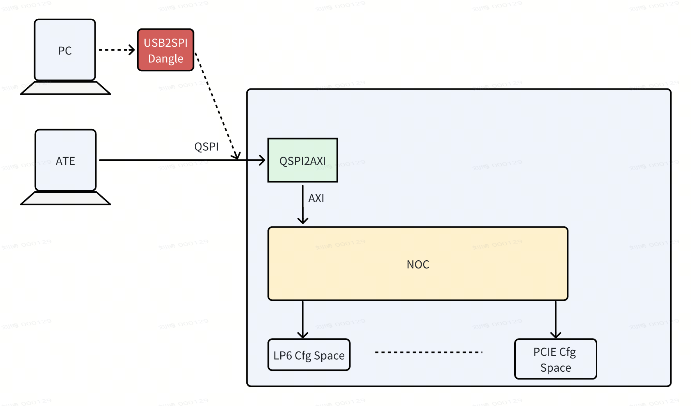
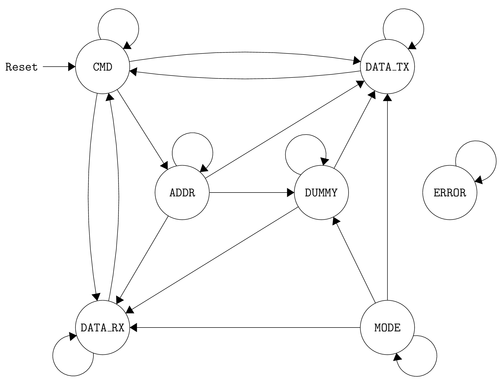
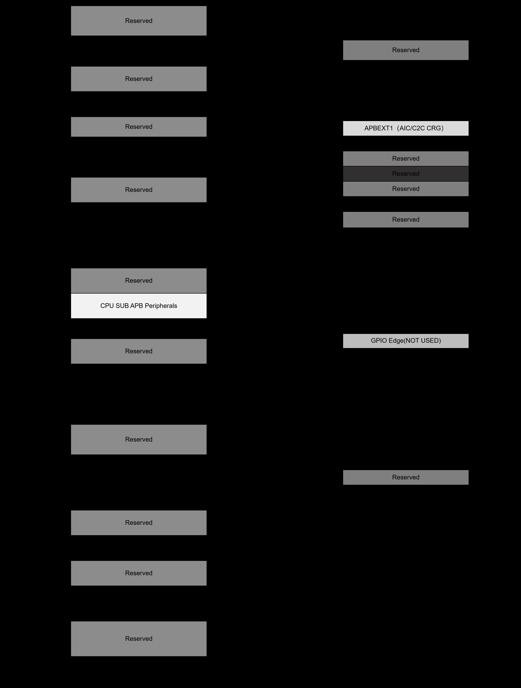

SPI2AXI Bridge — Architecture Blueprint (HLD)
Chapter 1 Module Overview
1.1 Module Identity
| Attribute | Value |
|---|---|
| Module Full Name | SPI2AXI Bridge (spi2axi_bridge_top) |
| Hierarchical Path | soc.periph_bus.spi2axi_bridge |
| Function Classification | Interface Bridge (SPI Slave to AXI4-Lite Master) |
| Technology Node | TBD |
| Target Frequency | SPI: 50MHz / AXI: Depends on SoC system clock |
| Supply Voltage | TBD |
1.2 One-Line Summary
SPI2AXI Bridge IP is a bridge module that converts an SPI Slave interface to an AXI4-Lite Master interface. It allows external SPI masters to directly access memory-mapped register spaces and peripherals on the AXI bus through standard SPI or Quad-SPI (QSPI) bus protocols without requiring SoC internal CPU intervention. It is widely used in SoC system debugging, configuration management, firmware updates, and chip test verification.
1.3 Functional Goals
- Support standard SPI and Quad-SPI (QSPI) dual-mode protocol: Provides 1-wire standard SPI and 4-wire QSPI operating modes, dynamically switching data line width via SPI-side configuration registers.
- Transparently convert SPI bus commands to AXI4-Lite bus transactions: Parses the 8-bit opcode and 32-bit address, generates corresponding AXI4-Lite write/read channel transactions.
- Reliable clock domain crossing (CDC) data transfer: Uses dual-clock async FIFO architecture with Gray-code pointer synchronization between SPI (50MHz) and AXI clock domains.
- Support configurable address wrap access mode: Software-programmable address wrap within a window of N 32-bit words (4xN bytes).
- Provide SPI-side configuration registers and status feedback: Supports mode selection, transfer status query, Wrap parameter configuration via opcode-encoded register space.
1.4 Non-Functional Goals
| Dimension | Target | Measurement Condition |
|---|---|---|
| Performance | Standard SPI peak throughput >= 6.25 MB/s (50MHz / 8bit-per-byte x 1-lane) | Continuous back-to-back transfers, no chip-select interval |
| Performance | QSPI peak throughput >= 25 MB/s (50MHz / 8bit-per-byte x 4-lane) | Continuous back-to-back transfers, 4-wire full duplex |
| Latency | SPI command to AXI transaction latency <= 5 AXI clock cycles | No FIFO contention, AXI Slave zero-wait response |
| Latency | SPI read end-to-end latency <= DUMMY_CYCLES + 10 SPI clock cycles | Minimum Dummy Cycles config, AXI read zero-wait |
| Power | Dynamic power < TBD mW | Full load, typical process corner |
| Area | Area budget < TBD kgates | Typical process corner, excluding FIFO SRAM |
| Reliability | Zero bit-error for CDC data transfers | Async FIFO Gray-code pointer sync, CDC path SVA assertions |
1.5 Top-Level Port Groups Summary
| Port Group | Direction | Width | Clock Domain | Description |
|---|---|---|---|---|
spi_* | in/out | 1-4 | spi_sclk | SPI interface signals: clock, chip-select, data input/output |
axi_* | in/out | 1-32 | axi_aclk | AXI4-Lite 5-channel master interface signals |
clk_* | input | 1 | — | Clock inputs: spi_sclk, axi_aclk |
rst_* | input | 1 | — | Async reset inputs: spi_rst_n, axi_rst_n |
cfg_* | input | 1-3 | axi_aclk | Config parameters: AXI_ADDR_WIDTH, AXI_DATA_WIDTH, AXI_ID_WIDTH, DUMMY_CYCLES |
1.6 Functional Boundary
- In Scope: SPI standard mode (1-line) and Quad-SPI mode (4-line) read/write operations
- In Scope: AXI4-Lite 5-channel (AW/W/B/AR/R) protocol conversion and handshake management
- In Scope: Async FIFO CDC synchronization between SPI and AXI clock domains
- In Scope: Configurable address wrap calculation and boundary detection
- In Scope: SPI-side configuration register read/write access (opcode-encoded register space)
- Out of Scope: AXI4-Full protocol (no out-of-order or variable burst length)
- Out of Scope: SPI Master mode — this module operates only as an SPI Slave
- Out of Scope: Multi SPI chip-select support — single SPI Slave only
- Out of Scope: Interrupt output — pure polling/query-based status feedback
Chapter 2 External Interface Definition
2.1 Top-Level I/O List
| Signal | Dir | Width | Type | Clk Domain | Rst Domain | Description |
|---|---|---|---|---|---|---|
spi_sclk | input | 1 | Clock | — | — | SPI serial clock, external Master, max 50MHz |
spi_cs_n | input | 1 | Chip-Select | spi_sclk | — | SPI chip-select, active low |
spi_sdi | input | 4 | Data | spi_sclk | spi_rst_n | SPI data input; bit[0] for 1-line, bit[3:0] for 4-line |
spi_sdo | output | 4 | Data | spi_sclk | spi_rst_n | SPI data output; bit[0] for 1-line, bit[3:0] for 4-line |
axi_aclk | input | 1 | Clock | — | — | AXI system clock from SoC CMU |
axi_rst_n | input | 1 | Reset | axi_aclk | — | AXI domain async reset, active low |
axi_awid | output | AXI_ID_WIDTH | Addr | axi_aclk | axi_rst_n | Write address channel ID |
axi_awaddr | output | AXI_ADDR_WIDTH | Addr | axi_aclk | axi_rst_n | Write address |
axi_awlen | output | 8 | Ctrl | axi_aclk | axi_rst_n | Burst length, fixed to 0 |
axi_awsize | output | 3 | Ctrl | axi_aclk | axi_rst_n | Burst size, fixed to 2 (4 bytes) |
axi_awburst | output | 2 | Ctrl | axi_aclk | axi_rst_n | Burst type, INCR (adjusted by wrap_ctrl) |
axi_awvalid | output | 1 | HS | axi_aclk | axi_rst_n | Write address valid |
axi_awready | input | 1 | HS | axi_aclk | — | Write address ready |
axi_wdata | output | AXI_DATA_WIDTH | Data | axi_aclk | axi_rst_n | Write data |
axi_wstrb | output | AXI_DATA_WIDTH/8 | Data | axi_aclk | axi_rst_n | Write strobe, fixed all 1s |
axi_wvalid | output | 1 | HS | axi_aclk | axi_rst_n | Write data valid |
axi_wready | input | 1 | HS | axi_aclk | — | Write data ready |
axi_bid | input | AXI_ID_WIDTH | Resp | axi_aclk | — | Write response ID |
axi_bresp | input | 2 | Resp | axi_aclk | — | Response: OKAY=00, EXOKAY=01, SLVERR=10, DECERR=11 |
axi_bvalid | input | 1 | HS | axi_aclk | — | Write response valid |
axi_bready | output | 1 | HS | axi_aclk | axi_rst_n | Write response ready |
axi_arid | output | AXI_ID_WIDTH | Addr | axi_aclk | axi_rst_n | Read address channel ID |
axi_araddr | output | AXI_ADDR_WIDTH | Addr | axi_aclk | axi_rst_n | Read address |
axi_arlen | output | 8 | Ctrl | axi_aclk | axi_rst_n | Read burst length, fixed to 0 |
axi_arsize | output | 3 | Ctrl | axi_aclk | axi_rst_n | Read burst size, fixed to 2 |
axi_arburst | output | 2 | Ctrl | axi_aclk | axi_rst_n | Read burst type, INCR |
axi_arvalid | output | 1 | HS | axi_aclk | axi_rst_n | Read address valid |
axi_arready | input | 1 | HS | axi_aclk | — | Read address ready |
axi_rid | input | AXI_ID_WIDTH | Data | axi_aclk | — | Read data ID |
axi_rdata | input | AXI_DATA_WIDTH | Data | axi_aclk | — | Read data |
axi_rresp | input | 2 | Resp | axi_aclk | — | Read response |
axi_rvalid | input | 1 | HS | axi_aclk | — | Read data valid |
axi_rready | output | 1 | HS | axi_aclk | axi_rst_n | Read data ready |
2.2 Configuration Interface
- Protocol: SPI Slave (Standard SPI / Quad-SPI)
- Interface Type: Asynchronous (no phase relationship with AXI clock domain)
- Max Clock Frequency: 50 MHz (SPI sclk)
- Address Space: Register space by 8-bit opcode + 32-bit address memory space
- Register Depth: 8 x 32-bit registers (SPI-side config/status)
- Timing: SPI Mode 0 (CPOL=0, CPHA=0), sample on rising edge, update on falling edge. CS low starts a transfer; high terminates.
- Cycle-Level: Write: OPCODE(8) + ADDR(32) + DATA(32) = 72 SCLK (1-line) / 18 SCLK (4-line). Read: + DUMMY(N+1) cycles.
2.3 Data Plane Interface
- Protocol: AXI4-Lite (Master), 32-bit data width, 5 channels (AW, W, B, AR, R)
- Max Burst: 1 beat (AxLEN=0), no out-of-order
- Key Timing: AW/W independent valid; AR channel read address; wait for awready/arready before next addr.
2.4 Interrupt Interface
This module does not include a dedicated interrupt output. Status query via SPI register polling. For interrupt support, add a SoC-level GPIO interrupt controller.
| Interrupt | Type | Source | Clear |
|---|---|---|---|
intr_o | None | N/A | N/A — polling only |
2.5 Other Dedicated Interfaces
No MIPI, DDR, SerDes. All functionality via SPI (config/data plane) and AXI4-Lite (data plane). Static config parameters via HDL parameterization at instantiation.
Chapter 3 Top-Level Architecture Block Diagram
3.1 Module Internal Structure

+------------------+ +-------------+ +------------------+
| spi_slave |--->| cmd_decoder |--->| axi_master |---> AXI Bus
| SPI Slave I/F |<---| Cmd FSM |<---| AXI4-Lite Master |<---
+--------+---------+ +------+------+ +--------+---------+
| | |
v v v
+--------------------------------------------------------------+
| async_fifo (Dual-Clock CDC) |
| [Write Cmd] [Write Data] [Read Addr] [Read Data] FIFOs |
+--------------------------------------------------------------+
^ ^
| |
+------+------+ +------+------+
| config_regs | | wrap_ctrl |
+-------------+ +-------------+
+--------------------------------------------------------------+
| Clock / Reset Synchronization Logic |
+--------------------------------------------------------------+3.2 Sub-Module Responsibilities
| Sub-Module | Responsibility | Key Considerations | Complexity | LLD Ref |
|---|---|---|---|---|
| spi_slave | SPI PHY: 1/4-line serial-parallel conversion, SCLK sampling, CS mgmt | Mode 0 timing, dynamic 1/4-line switching | Medium | Ch3, Ch2 |
| cmd_decoder | Cmd parsing FSM: opcode decode, frame control (IDLE→OP→ADDR→DM→DATA→RESP) | State encoding, exception handling, timeout | High | Ch4 |
| async_fifo | CDC bridge: dual-clock async FIFO, Gray-code sync, empty/full flags | Metastability avoidance, depth matching | High | Ch3, Ch8 |
| axi_master | AXI4-Lite master: 5-channel handshake, addr/data/response handling | Protocol compliance, Wrap address injection | Medium | Ch3, Ch2 |
| config_regs | SPI-side register file: mode select, status, Wrap config | Opcode addr encoding, bit-field attributes | Low | Ch7 |
| wrap_ctrl | Address wrap: counting, boundary detection, address calculation | Start addr alignment, window boundary | Low | Ch6, Ch10 |
| Clock/Reset | Clock gating, reset synchronizer, CDC isolation | 2-stage sync, reset domain crossing, false paths | Low | Ch8 |
3.3 Key Data Path Bandwidth
| Path | Protocol | Width | Domain | Bandwidth | Notes |
|---|---|---|---|---|---|
| SPI Master → spi_slave | SPI 1-line | 1-bit | 50MHz | 6.25 MB/s | Serial ingress |
| SPI Master → spi_slave | QSPI 4-line | 4-bit | 50MHz | 25 MB/s | QSPI mode |
| spi_slave → async_fifo | Parallel | 32-bit | spi_sclk | 200 MB/s | After S2P |
| async_fifo → axi_master | Parallel | 32-bit | axi_aclk | Depends | After CDC |
| axi_master → AXI Bus | AXI4-Lite | 32-bit | axi_aclk | Depends | Egress |
| AXI Bus → axi_master | AXI4-Lite | 32-bit | axi_aclk | Depends | Read return |
| async_fifo → spi_slave | Parallel | 32-bit | spi_sclk | 200 MB/s | Read data to SPI |
| spi_slave → SPI Master | SPI 1/4-line | 1-4 bit | 50MHz | 6.25-25 MB/s | Serial egress |
Chapter 4 Data Flow and Control Flow
4.1 Data Flow Paths
Write data flow: SPI Master → spi_slave (serial-to-parallel) → cmd_decoder → async_fifo (Write Cmd + Write Data FIFOs, CDC spi_sclk→axi_aclk) → axi_master (AW/W/B channels) → AXI Bus.
Read data flow: SPI Master → spi_slave → cmd_decoder → async_fifo (Read Addr FIFO, CDC spi_sclk→axi_aclk) → axi_master (AR/R channels) → async_fifo (Read Data FIFO, CDC axi_aclk→spi_sclk) → spi_slave (parallel-to-serial) → spi_sdo.
4.2 Control Flow
Control core is the cmd_decoder FSM. States: IDLE, OPCODE, ADDR, DUMMY, DATA, RESPONSE, ERROR.

stateDiagram-v2
[*] --> IDLE
IDLE --> OPCODE: spi_cs_n == 0
OPCODE --> OPCODE: bit_count < 8
OPCODE --> ADDR: bit_count==8 && MEM
OPCODE --> DATA: bit_count==8 && REG
ADDR --> DUMMY: bit_count==32 && READ
ADDR --> DATA: bit_count==32 && WRITE
DUMMY --> DATA: dummy_cnt == cfg
DATA --> RESPONSE: bit_count == 32
RESPONSE --> IDLE: axi_done || spi_cs_n==1

| State | Description | Entry Action | Exit Condition |
|---|---|---|---|
| IDLE | Idle, SPI ready for new transfer | Clear flags, reset bit counter | spi_cs_n low |
| OPCODE | Receive 8-bit opcode MSB-first | Enable shift register, start bit count | 8-bit done |
| ADDR | Receive 32-bit target address | Enable addr shift register, 32-bit count | 32-bit done |
| DUMMY | Insert dummy SCLK cycles, wait for AXI read data | Start dummy counter, SDO high-Z | Dummy done or AXI data ready |
| DATA | Data transfer: receive write / send read | Write: receive 32-bit; Read: send 32-bit | 32-bit done |
| RESPONSE | Write response / read completion | Wait for B channel; confirm R channel | Response received or CS high |
| ERROR | AXI Slave error response | Record error code, terminate transfer | spi_cs_n high |
4.3 Backpressure and Flow Control
Backpressure propagation: AXI Slave slow → axi_master delay → async_fifo full → cmd_decoder pause → spi_slave hold. FIFO depth 4-8 entries recommended. Timeout detection at 1024 AXI clock cycles.
4.4 Concurrency and Conflict
Single SPI frame at a time. Read/write mutually exclusive by opcode. No atomic operation support.
Chapter 5 Main Features and Configurable Parameters
5.1 Core Features
| Category | Feature | Description | Req |
|---|---|---|---|
| Protocol | Standard SPI 1-line | Single data line, 1 bit/SCLK | Mandatory |
| Protocol | Quad-SPI 4-line | 4 data lines, 4 bit/SCLK | Optional |
| Protocol | AXI4-Lite Master | 5-channel, single transfer, OKAY/SLVERR/DECERR | Mandatory |
| Data | MSB-first | All frames MSB first | Mandatory |
| Data | Write frame | OPCODE(8)+ADDR(32)+DATA(32) | Mandatory |
| Data | Read frame | OPCODE(8)+ADDR(32)+DUMMY(N+1)+DATA(32) | Mandatory |
| Error | AXI error response | Detect SLVERR/DECERR, record to STATUS | Mandatory |
| Error | SPI abort | CS high mid-transfer → IDLE, drop frame | Mandatory |
| Debug | SPI-side status registers | Read FIFO status, error codes | Mandatory |
| Low Power | Auto clock gating | Active only on SCLK transitions when idle | Optional |
5.2 Configurable Parameters
| Parameter | Type | Default | Range | Description | Impact |
|---|---|---|---|---|---|
AXI_ADDR_WIDTH | int | 32 | 12-64 | AXI address bus width | Area↑ |
AXI_DATA_WIDTH | int | 32 | 32 fixed | AXI data bus width | Fixed |
AXI_ID_WIDTH | int | 3 | 1-8 | AXI ID for transaction source ID | Area↑ |
DUMMY_CYCLES | int | 32 | 0-255 | Dummy cycles = value + 1 | Latency↑ |
FIFO_DEPTH | int | 8 | 2-64 | Async FIFO depth (entries) | Area↑ |
WRAP_ENABLE | bit | 1 | 0/1 | Enable address wrap | Area↓ |
DEFAULT_WRAP | int | 0 | 0-1024 | Default wrap window size | — |
SPI_MODE | int | 0 | 0-3 | SPI CPOL/CPHA mode | Fixed |
5.3 Configuration Register Summary
Registers accessed via SPI opcodes (REG_READ/REG_WRITE), separate from AXI memory space.
| Opcode | Name | Attr | Reset | Description |
|---|---|---|---|---|
| TBD | CTRL | RW | 0x0000_0000 | Control: SPI mode, soft reset, transfer enable |
| TBD | STATUS | RO | 0x0000_0001 | Status: FIFO flags, busy, error code |
| TBD | WRAP_CFG | RW | 0x0000_0000 | Wrap: enable, window size N |
| TBD | DUMMY_CFG | RW | 0x0000_0020 | Dummy cycles config (default 32) |
| TBD | FIFO_STATUS | RO | 0x0000_0000 | FIFO fill levels, empty/full flags |
| TBD | SCRATCH | RW | 0x0000_0000 | Debug scratch register |
| TBD | VERSION | RO | 0x0000_0100 | IP version and revision |
5.4 Operation Modes
| Mode | Encoding | Description | Use |
|---|---|---|---|
| Standard SPI | 0 | 1-line, spi_sdi[0]/sdo[0] | Debug/config |
| Quad-SPI | 1 | 4-line, spi_sdi[3:0]/sdo[3:0] | Firmware update, bulk data |
| Wrap Disabled | 0 | Linear address increment (+4) | Linear access |
| Wrap Enabled | 1 | Cyclic within N-word window | Cyclic buffer, reg batch |
Chapter 6 Clock, Reset and Power Architecture
6.1 Clock Domain Overview
Two asynchronous clock domains: spi_sclk (≤50MHz, external SPI Master) and axi_aclk (SoC CMU). No fixed phase/frequency ratio. Async FIFO is the sole CDC bridge. FIFO depth must absorb worst-case clock rate differences.
| Domain | Source | Freq | Target Modules |
|---|---|---|---|
spi_sclk | External SPI Master | ≤50 MHz | spi_slave, cmd_decoder, config_regs, wrap_ctrl |
axi_aclk | SoC CMU | Depends | axi_master, async_fifo (AXI port) |
6.2 Reset Structure
Async assert, sync deassert. Each domain has independent *_rst_n with 2-stage synchronizer.
| Signal | Type | Domain |
|---|---|---|
spi_rst_n | Async active-low | spi_sclk |
axi_rst_n | Async active-low | axi_aclk |
6.3 Power Modes
Active: full speed, both clocks on. Idle: no SPI transfer, FIFOs empty, wake by spi_cs_n. Sleep: clocks gated by SoC, needs SoC-level wake-up.
Chapter 7 Performance / Power / Area Targets
7.1 Performance Targets
| Metric | Symbol | Target | Condition |
|---|---|---|---|
| Freq | Fmax_spi | ≥50 MHz | Typical corner |
| Freq | Fmax_axi | ≥100 MHz | Typical corner |
| Peak Tput | Tput_peak | 6.25 MB/s (1L) / 25 MB/s (4L) | Back-to-back, zero AXI wait |
| Min Read Latency | Lat_min_read | DUMMY_CYCLES + ~10 SPI cycles | No contention, immediate return |
| Cmd Decode Latency | Lat_cmd_decode | 1 SPI clock cycle | Combinational decode |
7.2 Power Budget
TBD — Requires PrimeTime PX after synthesis.
7.3 Area Budget
TBD — Requires synthesis data. Modules: spi_slave, cmd_decoder, async_fifo (x4), axi_master, config_regs, wrap_ctrl, Clock/Reset.
Chapter 8 Application Scenarios
8.1 Typical Use Cases
Use Case 1: SoC Debug and Config. External debug host accesses internal registers via SPI. Sequence: REG_WRITE for mode config → WRITE to target address → READ to verify.
Use Case 2: Firmware Bulk Update. External programmer writes firmware via QSPI 4-line mode. Requires 25 MB/s throughput, continuous frame support.
Use Case 3: ATE Test Config. Minimal SPI pins (4), high reliability, deterministic reset.
8.2 Exception Scenarios
CS abort mid-transfer, AXI Slave error (SLVERR/DECERR), FIFO full backpressure, illegal opcode, soft reset recovery.
8.3 Usage Limitations
1 outstanding AXI transaction. No unaligned access. FIFO depth static at instantiation. DUMMY_CYCLES must cover worst-case AXI read latency. CDC sync requires 2-3 target clock cycles.
Chapter 9 Assumptions and Constraints
9.1 Key Assumptions
| # | Assumption | Impact | Verification |
|---|---|---|---|
| A1 | SPI frame format conforms to spec | Parse errors if non-conforming | UVM legal/illegal frames |
| A2 | Regs accessed only during CS low via REG_READ/WRITE | Undefined behavior if violated | Formal assertion |
| A3 | AXI Slave responds in <1024 cycles | Timeout → ERROR state | UVM latency injection |
| A4 | SPI clock ≤50MHz | Setup/hold violations | STA worst-corner |
| A5 | Both clocks continuously provided | Gray-code sync failure if stopped | Clock gating scenarios |
| A6 | Target AXI Slave exists | DECERR if not | UVM error injection |
| A7 | SPI Master provides sufficient dummy cycles | Invalid read data if insufficient | Boundary tests |
9.2 Design Constraints
Timing: I/O delay 5.0 ns, async false paths, AXI valid/ready handshake. Physical: TBD area, VDD_CORE domain, near-boundary floorplan. Tools: no synopsys_translate_off, scan chain for all FFs, STA at 50MHz SPI.
9.3 External Dependencies
| Module | Type | Interface | Risk |
|---|---|---|---|
| SoC AXI Bus Matrix | Data | AXI4-Lite | Low |
| SoC CMU | Clock | axi_aclk | Low |
| SPI I/O Pad | Physical | SPI signals | Medium |
| SoC Reset Controller | Control | rst_n | Low |
9.4 Open Issues
Q01: SPI Mode 1/2/3 support? Q02: AXI target frequency? Q03: FIFO SRAM vs register? Q04: Dynamic wrap window? All TBD owner/deadline.
Chapter 10 Architecture Decision Record
| ADR | Decision | Rationale | Consequence | Date |
|---|---|---|---|---|
| 001 | AXI4-Lite over AXI4-Full | Single-beat only for debug/config | No burst/OoO, reduced area/verif | 2026-05-21 |
| 002 | Shared SPI/QSPI pins | Reuse pins via dynamic config | Modes mutually exclusive | 2026-05-21 |
| 003 | Serial FSM, no pipeline | SPI is inherently frame-serial | No parallelism, simpler design | 2026-05-21 |
| 004 | Async FIFO for CDC | Higher throughput than handshake | Larger area, Gray-code logic | 2026-05-21 |
Chapter 11 Verification Feature Mapping Guide
11.1 Feature-to-Verification Mapping
| # | Feature | Verification Focus | Method | Coverage |
|---|---|---|---|---|
| F01 | All SPI modes (1L/4L) | Data correctness, mode switching | UVM scoreboard | 100% mode x data |
| F02 | All opcodes | FSM transitions, AXI generation | UVM directed + random | 100% opcode |
| F03 | SPI/AXI protocol timing | Mode 0, valid/ready handshake | Formal assertion | 100% protocol rules |
| F04 | AXI 5-channel handshake | Cross-handshake, no violation | Formal + UVM monitor | 100% combinations |
| F05 | CDC integrity | No data loss/corruption | UVM random + FIFO boundary | 100% CDC paths |
| F06 | Address wrap | Calculation, boundary detection | UVM directed + random addr | 100% config x addr |
| F07 | SPI-side register access | RW/RO, reset value, bit-field | UVM reg_model | 100% registers/bits |
| F08 | FSM exception handling | Timeout, illegal opcode, CS abort | UVM injection + Formal | 100% error x state |
| F09 | Backpressure/flow control | FIFO full/empty protection | UVM backpressure injection | All FIFO states |
| F10 | Performance metrics | Latency, throughput | UVM perf monitor | ≥6.25/25 MB/s |
| F11 | AXI error response | SLVERR/DECERR sampling | UVM error injection | 100% error types |
| F12 | Assumption violations | Robustness under violation | Formal / UVM injection | Each assumption |
11.2 Excluded Features
Test-specific paths (scan, mbist) → DFT team. Combinational intermediate signals → covered end-to-end. Async FIFO internal Gray-code → covered by separate VIP.
11.3 Assertion Suggestions
Protocol: SPI data stable on rising edge, AXI valid-hold, bvalid after awready+wready. FSM: one-hot check, illegal state, transition legality. Data: no empty-read/full-write, SPI-AXI data consistency. Safety: key register protection, IDLE after reset, pointer difference ≤ depth.
Appendix A: Glossary
| Term | Meaning |
|---|---|
| SPI | Serial Peripheral Interface |
| QSPI | Quad Serial Peripheral Interface |
| AXI | Advanced eXtensible Interface (ARM AMBA) |
| AXI4-Lite | AXI4 light, single transfer, no OoO |
| CDC | Clock Domain Crossing |
| FIFO | First-In First-Out buffer |
| FSM | Finite State Machine |
| PPA | Performance, Power, Area |
| MSB | Most Significant Bit |
| CSR | Control and Status Register |
| SLVERR | Slave Error (AXI) |
| DECERR | Decode Error (AXI) |
| ATE | Automatic Test Equipment |
| DFT | Design for Test |
| MBIST | Memory Built-In Self-Test |
Appendix B: Reference Documents
| Document | Version | Source | Description |
|---|---|---|---|
| SPI2AXI SPEC.pdf | Rev 1.0 | Product Spec | Original design specification |
| ARM AMBA AXI and ACE Protocol Spec | ARM IHI 0022E | ARM Official | AXI4/AXI4-Lite protocol |
| SPI2AXI Planning Report | V1.0 | 1.planning/ | Planning phase output |
| SPI2AXI Slice Documents (14 files) | V1.0 | 2.slice/ | Slice analysis phase output |
| 03_block_arch.HLD.md Template | V1.0 | agents/template/ | Architecture blueprint template |